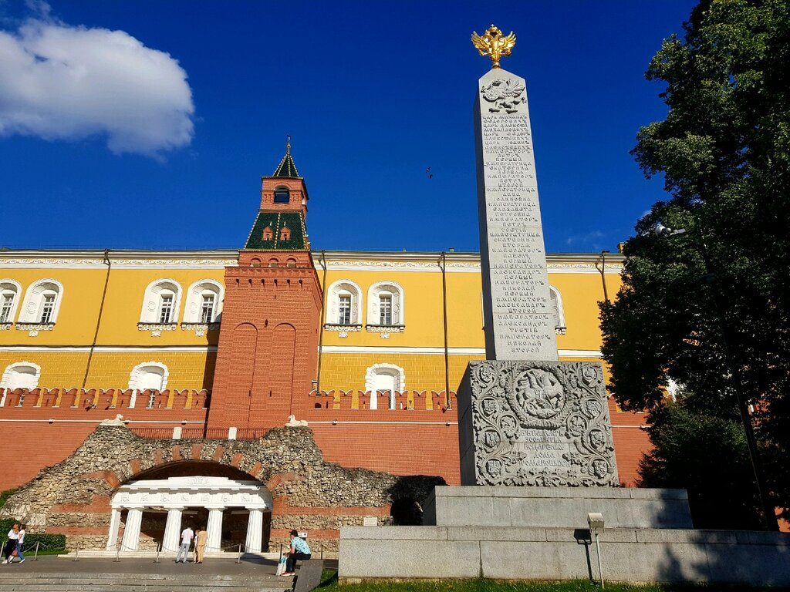
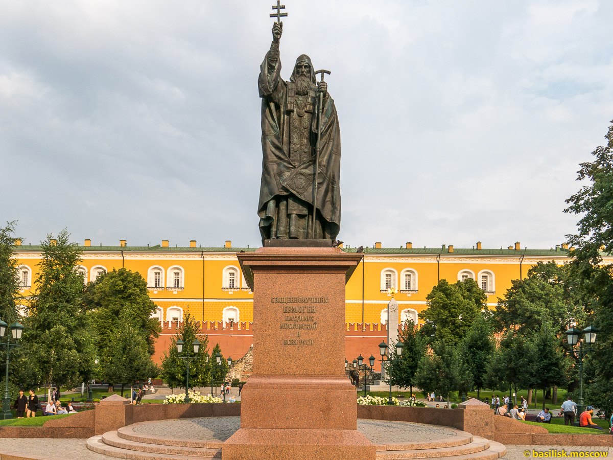

Алекса́ндровский сад
Алекса́ндровский сад — парк в Тверском районе Москвы, расположен вдоль западной Кремлёвской стены, тянется от площади Революции до Кремлёвской набережной. Был основан в 1812 году. Парк площадью 10 гектаров состоит из трёх частей: Верхнего, Среднего и Нижнего садов. В нём находятся такие исторические объекты, как Кутафья башня Кремля, Итальянский грот, обелиск к 300-летию Дома Романовых и другие. Особое место занимают памятники, посвященные Отечественной войне 1812 года и Великой Отечественной войне.
Верхний сад
Верхний сад был открыт в 1821 году, его протяжённость составляет 350 метров — от площади Революции до Троицкой башни.

8 мая 1967 года на территории Верхнего сада установили архитектурный мемориальный ансамбль — Могила Неизвестного Солдата, где были перезахоронены останки красноармейцев, погибших в 1941-м в Московской битве. Мемориал спроектировали Юрий Рабаев, Дмитрий Бурдин, Владимир Климов и Николай Томский. На надгробной плите расположена бронзовая композиция из солдатской каски, лавровой ветви и боевого знамени. В самом центре мемориала выбита надпись: «Имя твоё неизвестно, подвиг твой бессмертен». Слева от Могилы находится стена из малинового кварцита с надписью: «1941 Павшим за Родину 1945», справа — гранитная аллея с двенадцатью отдельными блоками из тёмно-красного порфира, на каждом из которых указано имя города-героя, размещено изображение «Золотой звезды», а внутри блоков — капсулы с землёй. Возле мемориала горит Вечный огонь, привезённый с Марсового поля из Санкт-Петербурга. Факел принял Алексей Маресьев, а в центр звезды огонь поместил Леонид Брежнев. Рядом с Вечным огнём находится Пост № 1, где регулярно с 12 декабря 1997 года с 08:00 до 20:00 стоит почётный караул военнослужащих Президентского полка. Ежегодно 22 июня, в день начала Великой Отечественной войны, на смену заступает почётный караул, к огню возлагают венки и зажигают поминальные свечи.
В 2009-м памятник получил статус общенационального. В декабре этого же года из-за ремонта коммуникаций мемориального комплекса Вечный огонь из Александровского сада перенесли в Парк Победы на Поклонной горе, а 23 февраля следующего года вернули на место.
В мае 2017 года состоялась 50-летняя годовщина зажжения Вечного огня на Могиле Неизвестного Солдата. Военнослужащие перенесли огонь на копию звезды на Могиле тем же факелом, что и 50 лет назад, собравшиеся в саду почтили минутой молчания память погибших в годы войны.

В 1820 году по проекту Осипа Бове в центре Верхнего сада у Средней Арсенальной башни Кремля возвели грот «Руины», который также называют «Итальянский грот». Это полукруглая арка из чёрного гранита и красного кирпича, внутри которой установлены ворота из мрамора с четырьмя массивными колоннами. Грот построен из разрушенных французской армией московских домов и каменных ядер. Лестница в южной части грота ведёт к скульптурам двух львов. В этом сооружении Бове объединяет классику Москвы с архитектурной стариной. В XIX — начале XX века в Гроте по выходным играл полковой оркестр и устраивали аттракционы. В 1872 году, в честь 200-летия со дня рождения Петра I, в павильонах рядом с гротом проводилась Политехническая выставка с техническими и культурными экспонатами, которые стали основой для Политехнического музея..
В 1913 году в честь 300-летия царствования Романовых возле главного входа в сад был установлен Романовский памятник-обелиск архитектора Сергея Власьева. Четырёхгранную стелу венчал двуглавый орёл, под обелиском располагались лев с мечом и щитом, герб и имена Романовых, а также гербы княжеств и губерний Российской Империи. По окончании Октябрьской революции обелиск переименовали в «Памятник революционерам и теоретикам социализма» и видоизменили. Из композиции убрали царскую символику, имена Романовых сменили на имена революционных деятелей, появились надписи: «Пролетарии всех стран, соединяйтесь!» и «РСФСР». В 1966 году обелиск переместили в центральную часть Верхнего сада рядом с гротом «Руины». В 2013-м при реставрации обелиску вернули первоначальный вид.
В мае 2013 года в саду установили бронзовый на мраморном постаменте памятник патриарху Гермогену, сделанный по проекту Российской академии живописи, ваяния и зодчества Ильи Глазунова. Постамент украшают барельефы: на одном изображена сцена избрания Михаила Романова царём, на втором — изгнание Патриархом Ермогеном бояр, просящих его благословения. На памятнике также перечислен состав художественной группы, работавшей над его созданием, а на отдельном постаменте — история памятника.
Фонтанный комплекс расположен по краю Александровского сада вдоль Манежной площади, был установлен в 1996 году. Комплекс состоит из шести частей: «Гейзер», «Река Неглинная», «Завеса», «Улитка», «Водопад», «Грот», которые украшены скульптурами Зураба Церетели. Фонтан «Река Неглиная» имитирует русло реки, его украшает скульптурная композиция «Герои сказок» со скульптурами персонажей: русалки, Ивана-царевича с Царевной-лягушкой и другие. Второй крупный фонтан в составе комплекса — «Гейзер», украшен скульптурой «Времена года», изображающей четырёх коней — четыре сезона. Остальные фонтаны комплекса небольшие и служат дополнением к основной части.
Средний сад
Средний сад был открыт на год позже Верхнего — в 1822-м. Он пролегает от Троицкой до Боровицкой башни, его протяжённость составляет 382 метра. В XVI—XVII веках на этом месте располагался Государев аптекарский сад, где выращивали лекарственные травы и отвозили в Аптекарский приказ. По состоянию на 2017 год в этой части сада находятся кассы музеев Московского Кремля.
Кутафья башня — единственная сохранившаяся отводная башня Кремля высотой 13,5 метров. Возведена в 1516 году под руководством архитектора Алевиза Фрязина. Башня служила препятствием при осаде крепости, была окружена рекой Неглинной и рвом. Современный вид она получила в 1685 году, когда её украсили ажурной короной с отдельными белокаменными деталями, а в 1780-м разобрали обветшавший кирпичный свод, перекрывающий башню.
Троицкий мост — один из старейших каменных мостов Москвы, соединяет Кутафью и Троицкую кремлёвские башни. Девятипролётный кирпичный мост был возведён в 1516 году также по проекту Алевиза Фрязина. Ажурный верх моста с белокаменными деталями появился в один год с оформлением Кутафьей башни. После реконструкции, которой руководил Бове, Троицкий мост оказался в центре Александровского сада, но по-прежнему оставался частью пути в Кремль через Троицкую башню. Бове также спроектировал пандусы, не сохранившиеся до наших дней, — полукруглые пологие сходы в сад с моста, украшенные решётками, вазами и фонарями, которые составляли единую композицию вместе с аркой под мостом. В 1901 году мост перестроили, и он приобрёл современный вид.
Памятник Александру I скульптора Салавата Щербакова был открыт 20 ноября 2014 года. Император изображён в парадной форме держащим шпагу, а под его ногами лежит вражеское оружие. Напротив монумента расположены бронзовые барельефы с изображениями Бородинской битвы, полководцев Отечественной войны 1812 года, иеромонаха Серафима Саровского и двух храмов — храма Христа Спасителя и Казанского собора.
Нижний сад
Нижний сад — самый короткий из трёх частей, его длина составляет 132 метра. Он был открыт в 1823 году и протянулся от Боровицкой башни до Кремлёвской набережной. В конце 1930-х часть Нижнего сада была срезана в связи с постройкой Большого Каменного моста. В Нижнем саду нет прогулочных аллей, на 2017-й год он закрыт для посетителей.